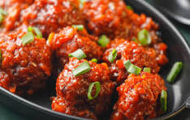

GOBI MANCHURIAN

Gobi manchurian also comes with its own authentic origin story. This one involves Nelson Wang, a Chinese chef from Kolkata, who supposedly dredged chicken cubes in cornflour and tossed them in a garlic-soy-vinegar sauce at his restaurant in Mumbai and created the dish
INGREDIENTS
- Cauli flower
- chilli sauce
- garlic-soy-vinegar
- ginger
- Onion
- turmeric and chilly powder
- garlic
- corn flour
- Water
- sauce
PPROCESS
- Cut the cauliflower into small florets. Boil water with a little salt and blanch the florets for about 3-4 minutes. Drain and set aside.
- Heat oil in a pan, add cumin seeds, and let them splutter. Add chopped onions and sauté until golden brown.
- Add green chilies, turmeric powder, red chili powder, and coriander powder. Cook for 1-2 minutes.
Stir in chopped tomatoes and cook until soft.
- Then cook